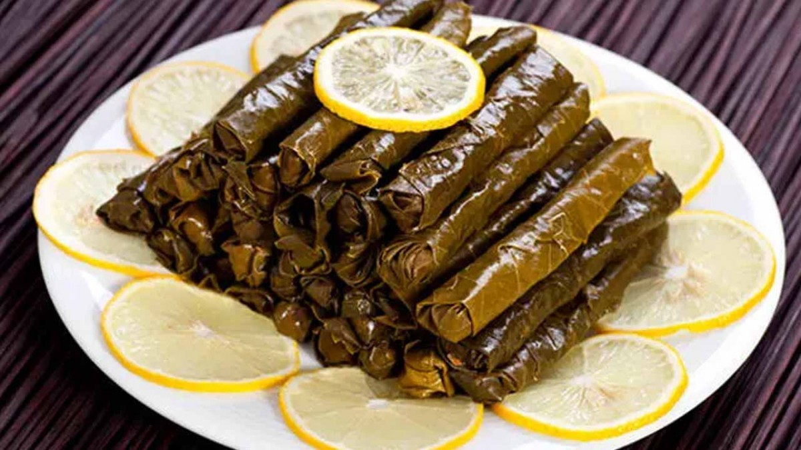
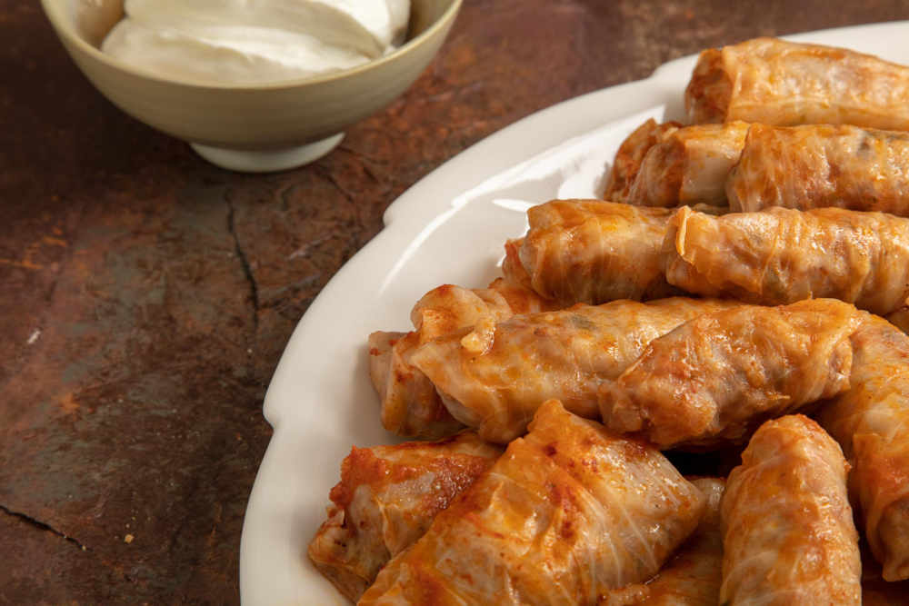
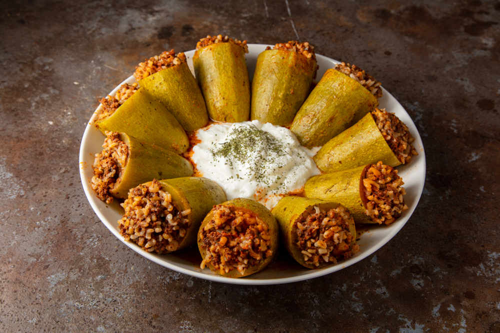

ROLLS&STUFFED
-

- 1 cup rice
- 1 cup water
- 1 onion (chopped)
- 1/2 cup olive oil
- 1/2 cup currants (optional, soaked in water)
- 1/2 cup pine nuts (optional, roasted)
- Salt
- Black pepper
- 1/2 bunch fresh mint or parsley (optional, chopped)
- 1/2 bunch fresh dill or green onions (optional, chopped)
- 1/2 cup pomegranate molasses or lemon juice
- Grape leaves (fresh or preserved, depending on availability)
- Rinse the rice and cook it in water until it becomes tender. Once cooked, drain and set aside.
- Chop the onion and sauté it in olive oil until it becomes golden brown.
- Add the cooked rice, drained currants, roasted pine nuts, salt, and black pepper to the sautéed onion. Optionally, add chopped fresh mint or parsley, and fresh dill or green onions. Mix well and remove from heat.
- Add pomegranate molasses or lemon juice to the mixture and stir until well combined.
- If you're using fresh grape leaves, blanch them in hot water for a few minutes to soften. If you're using preserved leaves, rinse them under cold water to remove excess salt.
- Place a grape leaf on a flat surface, shiny side down, and spoon a small amount of the rice mixture onto the center of the leaf.
- Fold the sides of the leaf over the filling and roll from the bottom to the top, forming a tight cylinder.
- Place the rolled grape leaves in a pot, tightly packed. You can place a plate on top to prevent them from opening during cooking.
- Add hot water to the pot, cover it, and cook over low heat for about 30-40 minutes.
- Once cooked, your stuffed grape leaves are ready to be served. They can be enjoyed hot or cold.
LEAF ROLL
Ingredıents:

CABBAGE ROLL
Ingredıents:
- 1 head of white cabbage
- 1 cup rice
- 300 grams ground beef
- 1 onion (grated)
- 2 tablespoons tomato paste
- 1/3 cup vegetable oil
- 1/4 cup pomegranate molasses or lemon juice
- Salt
- Black pepper
- 1/3 cup currants (optional)
- 1/2 bunch fresh parsley (optional, chopped)
- Separate the leaves of the cabbage and blanch them in boiling water for a few minutes until they are soft. Remove from water and let them cool
- Rinse the rice and drain. Place it in a bowl.
- In a mixing bowl, combine ground meat, grated onion, tomato paste, vegetable oil, pomegranate molasses or lemon juice, salt, and black pepper. Add currants if desired and chopped fresh parsley.
- Place a portion of the meat mixture onto the center of each cabbage leaf.
- Fold the sides of the leaf over the filling and roll from the bottom to the top, forming a tight cylinder.
- Arrange the cabbage rolls in a pot. Pour hot water over them, and cover the pot.
- Cook over medium heat for about 30-40 minutes, until the cabbage rolls are cooked.
- Serve your cabbage rolls hot or cold.

STUFFED BELL PEPPERS
Ingredıents:
- 10-12 medium-sized green bell peppers
- 1 cup rice
- 200 grams ground meat (beef or chicken)
- 1 medium-sized onion (grated or chopped)
- 2 tablespoons tomato paste
- 1/2 cup vegetable oil
- 1/2 cup pomegranate molasses or lemon juice
- Salt
- Black pepper
- 1/2 cup currants (optional)
- 1/2 bunch fresh mint or parsley (optional, chopped)
- Cut off the stems of the bell peppers and remove the seeds.
- Rinse the rice and drain. Place it in a bowl.
- In a mixing bowl, combine ground meat, grated or chopped onion, tomato paste, vegetable oil, pomegranate molasses or lemon juice, salt, black pepper, currants if desired, and chopped fresh mint or parsley.
- Stuff each bell pepper with the prepared filling.
- Arrange the stuffed peppers upright in a pot.
- Pour hot water over the peppers until they are half-submerged.
- Cook over medium heat for about 30-40 minutes or until the peppers are tender.
- Serve your stuffed bell peppers hot or cold.

ZUCCHİNİ STUFFED
Ingredıents:
- 6-8 medium-sized green zucchinis
- 1 cup rice
- 200 grams ground meat (beef or chicken)
- 1 medium-sized onion (grated or chopped)
- 2 tablespoons tomato paste
- 1/2 cup vegetable oil
- 1/2 cup pomegranate molasses or lemon juice
- Salt
- Black pepper
- 1/2 cup currants (optional)
- 1/2 bunch fresh mint or parsley (optional, chopped)
- Wash the zucchinis. Cut off the ends and halve them lengthwise.
- Add grated or chopped tomatoes. Add sugar, salt, and pepper. Cook for a few minutes until the tomatoes soften.
- Stir in the flour and cook for a few more minutes over low he
- Add chicken or vegetable broth. Bring the mixture to a boil, then reduce the heat and simmer for about 15-20 minutes.
- Use an immersion blender to blend the soup until smooth.
- Optionally, add milk and stir. Cook for a few more minutes.
- Garnish with fresh mint or basil before serving.